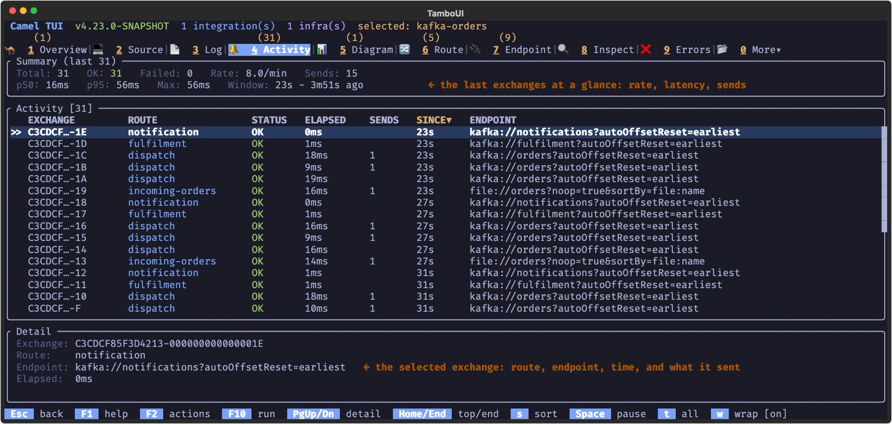
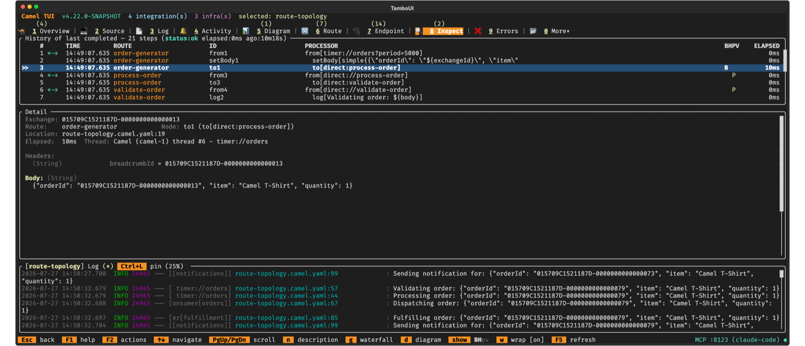
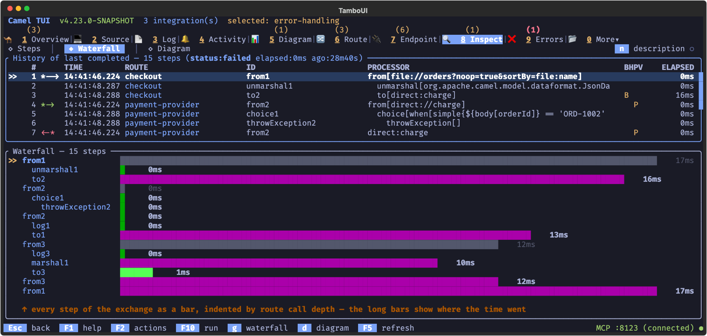
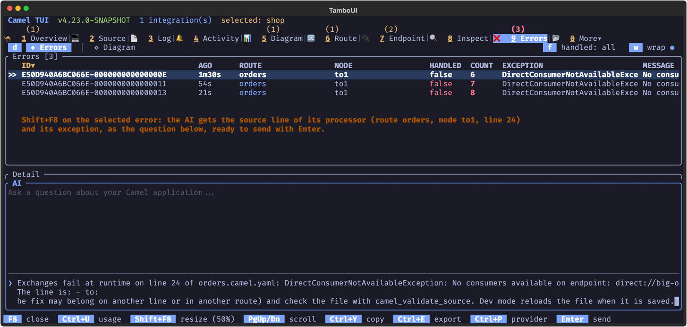
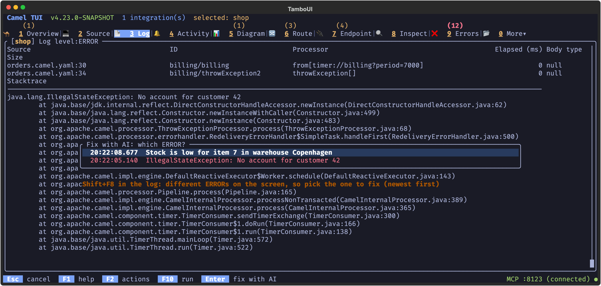
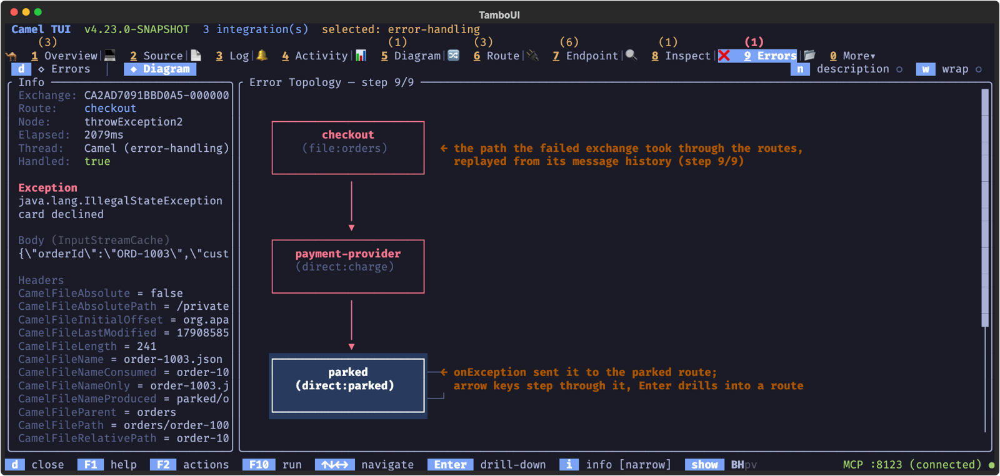
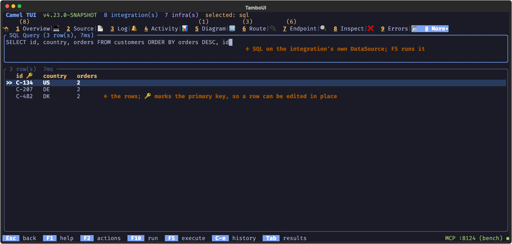
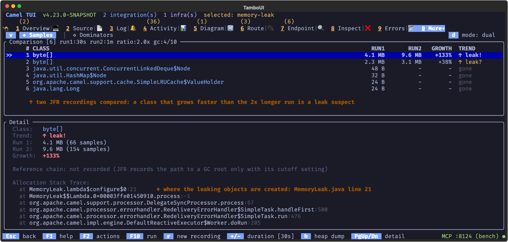

Camel TUI Observing Integrations
The TUI shows what a running integration is doing: every exchange as it happens, the full history of a message through the routes, the errors with their context, the traces, and the JVM underneath. This page covers the tabs for watching and troubleshooting an integration.
See Camel TUI for getting started and the other pages.
Key Features
-
Activity — live exchanges with their elapsed time, endpoint sends and failures
-
Message insight — step through the history of an exchange, as a list, a waterfall or on the diagram
-
Errors — failures with the stack trace, the message and the path that led there
-
OpenTelemetry spans — the traces of the integration, without a tracing backend
-
HTTP probe — call the HTTP endpoints of the integration from the TUI
-
Deep dives — CVE audit, Kafka, SQL, memory leaks, JFR profiling and the catalog
Activity
The Activity tab shows a live feed of exchange activity — every exchange that flows through the system is captured with its route, status (OK or Failed), elapsed time, endpoint sends, and how long ago it completed.
Activity data is captured when the integration runs in development mode (the dev profile), which is the default when running with camel run. Activity tracking can also be explicitly enabled via camel.trace.activityEnabled=true in application.properties. On a production profile without dev mode or explicit enablement, the tab is empty.
The top panel shows aggregated statistics: total / OK / failed exchange counts, total sends, p50 / p95 / max elapsed times, and the time window of the visible entries.

Select an exchange to see its details below: exchange ID, route, elapsed time, the remote endpoints called during the exchange with individual timings, and exception details if the exchange failed.
Use s to cycle sort order, S to reverse, and F5 to clear the activity list.
Message Insight
The Inspect tab lets you step through an exchange processor by processor — like scrubbing through a video timeline of your message’s journey. This is the key to understanding what Camel does with your data at every step.

History of Last Exchange
When you open the Inspect tab, it shows the last completed exchange. The top panel lists every processing step with:
-
Step number and direction (-→ or ←-)
-
Route and Node ID of the processor
-
BHPV change indicators — letters light up in yellow when Body, Headers, Properties, or Variables changed at that step
-
Elapsed time per step
Select a step with arrow keys, and the detail panel below shows the full exchange state: body content, headers, properties, and variables at that exact point in the processing chain.
Controlling What You See
Toggle sections of the detail view:
-
b — show/hide message body
-
h — show/hide headers
-
p — show/hide exchange properties
-
v — show/hide exchange variables
-
w — toggle word wrap
-
n — toggle description/processor labels
Waterfall View
Press g to switch to the waterfall view — a horizontal bar chart showing how long each processor took. This makes it easy to spot bottlenecks: long bars stand out immediately. The selected step is highlighted with >> and processing times are color-coded from green (fast) to red (slow).

Replay on the Diagram
Press d to overlay the message path on the route topology diagram. This is where the timeline replay comes alive:
-
The diagram highlights which route and processor handled the message at each step
-
Use Up/Down arrows to step forward and backward through the path
-
An Info panel on the left shows the exchange state (body, headers, properties, variables) at the current step — values that changed from the previous step are highlighted in yellow
-
Step through the entire exchange to watch how the message payload transforms as it flows through processors, filters, and content-based routers
-
Press Enter on a route node to drill down into its internal EIP structure while replaying
-
Press Esc to go back, t to return to the topology view
-
Press i to cycle the info panel size (narrow / wide / full)
This is especially powerful for understanding complex multi-route flows where messages are routed through direct, seda, or kafka endpoints between routes.
Live Tracing
When you run your integration with tracing enabled:
camel run my-route.yaml --traceThe Inspect tab gains a live trace panel showing every exchange as it flows through the system. Each exchange is listed with its timestamp, starting route, status (Processing/Done/Failed), elapsed time, and step count. Press Enter to drill into an exchange and see every processor step — the same step-by-step view and diagram replay work here too.
Use s to cycle sort order (time, route, elapsed, exchange) and S to reverse. Press F5 to clear captured traces.
Troubleshooting Errors
The Errors tab collects failures with full stack traces and exchange context. When errors occur, a red badge appears on the tab.
For deeper troubleshooting, press d on an error to see its Diagram view: the path the failed exchange took through the routes, replayed from its message history (the same replay as in the Inspect tab):
-
Failed steps are highlighted in red on the diagram
-
Step through the failing exchange to see the message state at each processor leading up to the failure
-
The Info panel shows the exception message and which node threw it
-
Compare the message body and headers before and after the failing step to understand what triggered the error
This combination of error details + visual diagram replay gives you a complete picture of what went wrong and why — without leaving the terminal.
Press Shift+F8 on an error to ask the AI to fix it: the AI panel opens with the source line of the processor the error happened at, and its exception, the same question as Shift+F8 on a failing line in the Source editor.

The Log tab has the same key. Shift+F8 asks the AI about the ERROR on the screen: for a failed exchange, the step that failed comes from its Message History, so the AI is asked to fix that line of the route; for a log with loggingLevel: ERROR, the logger names the source line. Any other ERROR is explained, and fixed when the cause is in the project. When different ERRORs are on the screen, a list comes up to pick one, newest first; the same error repeated is listed once.


OpenTelemetry Spans
The Spans tab (under More, shortcut o) visualizes OpenTelemetry traces collected from your running integration. It shows every span with trace ID, span name, kind, status, duration, and Camel-specific context (route ID, processor ID).
Run your integration with OpenTelemetry enabled:
camel run my-route.yaml --dep=camel:opentelemetryFeatures:
-
Waterfall view — spans displayed as a timeline showing parent-child relationships and duration bars, color-coded from green (fast) to red (slow)
-
Trace grouping — spans grouped by trace ID so you can follow a complete request across multiple routes and components
-
Camel-only filter — toggle to show only Camel-originated spans, hiding framework and library spans
-
Sort and search — sort by trace ID, route, status, duration, or span count; filter with text search
-
Error highlighting — failed spans (status ERROR) are highlighted in red
This is especially useful for understanding latency in multi-route integrations and for correlating Camel processing with external service calls (HTTP, database, messaging).
Process Information
The Process tab (under More, shortcut p) shows JVM process details for the selected integration: Java version, PID, uptime, command-line arguments, and system properties.
HTTP Probe
The HTTP tab (under More > Routing > HTTP) lists all HTTP/REST endpoints in your integration. Press Enter on any endpoint to open the built-in HTTP probe — a lightweight Postman for testing your REST services directly from the terminal.
Probe Layout
The probe screen is split into a request panel (left) and response panel (right):
Request panel — top to bottom:
-
Method — HTTP verb cycler (
GET,POST,PUT,DELETE,PATCH,HEAD,OPTIONS). Use Left / Right arrows to cycle. -
Path — editable path field, pre-filled from the endpoint. Supports
{xxx}placeholders. -
Path Parameters — if the path contains
{id},{name}, etc., a fill-in field appears for each placeholder. Values are substituted into the URL when sending. -
Query Parameters — key-value pairs appended to the URL as
?key=value&key2=value2. Press + to add a parameter. -
Content-Type — cycler with common MIME types (
application/json,application/xml,text/plain, etc.). Pre-filled from endpoint metadata when available. -
Accept — cycler for the Accept header. Pre-filled from endpoint metadata.
-
Headers — custom request headers as key-value pairs. Press + to add a header.
-
Body — multi-line text area (6 rows) for request body. Supports JSON, XML, plain text, or
file:payload.jsonto load from a file. Press Enter to insert newlines. -
History — previously sent requests with status codes and elapsed times. Press Enter to replay a request, restoring all fields.
Response panel — shows the response body with status code, elapsed time, and response headers. Press p to toggle pretty-printing for JSON and XML responses.
The resolved URL is shown at the top of the request panel as a clickable hyperlink that you can copy for use with curl or other tools.
Sending Requests
Press F5 to send the request (same pattern as the SQL tab). The response appears in the right panel. While sending, the status shows a spinner.
Keyboard Shortcuts (Probe)
| Key | Action |
|---|---|
F5 | Send request |
Enter | Insert newline (body) or advance to next field |
Tab / Shift+Tab | Next / previous field |
Left / Right | Cycle method, Content-Type, or Accept values |
+ | Add query parameter or header |
Backspace | Remove empty query parameter or header |
p | Toggle pretty-print response |
Esc | Exit probe mode |
Highlighted Features
Beyond the core tabs described above, the TUI includes several specialized screens worth highlighting.
CVE Audit
The CVE Audit tab (under More > Project) scans all Maven dependencies on your integration’s classpath against the OSV.dev vulnerability database. It queries every JAR using the OSV batch API and displays known vulnerabilities grouped by severity (Critical, High, Medium, Low).
Each vulnerability shows the CVE ID, affected artifact, the direct dependency that pulls it in (VIA column), and a summary. Select a CVE to see full details including CVSS vector, published date, fixed versions, and aliases. Results are cached globally — switching integrations that share JARs is instant.
Kafka
The Kafka tab (under More > Data) provides a dedicated view for Kafka consumers and their connectivity status. It shows consumer group details, topic assignments, partition offsets, and reconnection state. When a broker connection drops, the Recovery Tasks tab shows the reconnection task with its Waiting/Attempting status, retry count, and error details.
SQL Query and SQL Trace
When your integration includes a DataSource, two SQL tabs appear under More > Data:
-
SQL Query — an interactive SQL console where you can write and execute queries against any DataSource in your integration. Results are displayed as a formatted table with column types.
-
SQL Trace — captures and displays SQL statements executed by your routes in real-time, showing query text, execution time, and the route that triggered them.

Memory Leak Detection
The Memory Leak tab (under More > JVM) uses Java Flight Recorder (JFR) to diagnose memory leaks in your running integration. It runs two sequential recordings and compares object retention trends, classifying each class as growing, stable, shrinking, new, or gone. This is lightweight and safe for production use.

JFR Runtime Profiling
The JFR tab (under More > Observability) gives you a lightweight profiling view of your running integration using Java Flight Recorder. JFR is built into the JVM with very low overhead, making it suitable for near-production use cases where you need timing data without impacting throughput.
Start your integration with JFR runtime instrumentation enabled:
camel run my-route.yaml --jfrThe JFR tab shows the recording status and event configuration. Press F5 to take a snapshot of the active recording — the TUI aggregates all Camel events and presents them in five views:
-
Routes (key 1) — per-route totals, failure counts, and min/mean/max duration
-
Processors (key 2) — per-processor statistics with type and owning route, sorted by slowest first
-
Endpoints (key 3) — per-endpoint send statistics with duration
-
Failures (key 4) — recent exchange failures with exception type and message
-
Redeliveries (key 5) — recent redelivery attempts with attempt and max counts
Press Enter on a route to drill down into its processors filtered by that route. Press s to cycle sort columns, and Esc to go back.
Each snapshot is a point-in-time read — the recording keeps running, so you can press F5 again at any time to see updated statistics as more messages flow through the system.
Catalog
The Catalog tab (under More > Project) lets you browse the full Camel component catalog from within the TUI. Search for components by name, view their documentation, options, and supported headers — useful when building routes and you need to check what options a component supports.
It lists Kamelets too: the project’s own Kamelet files first, marked project, and the Kamelets of the catalog that the routes use (all of them with the full catalog, a). f cycles the kind, kamelet included, and d shows the properties of a Kamelet: required, type, default and description.